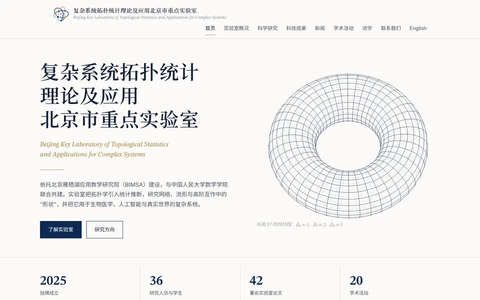
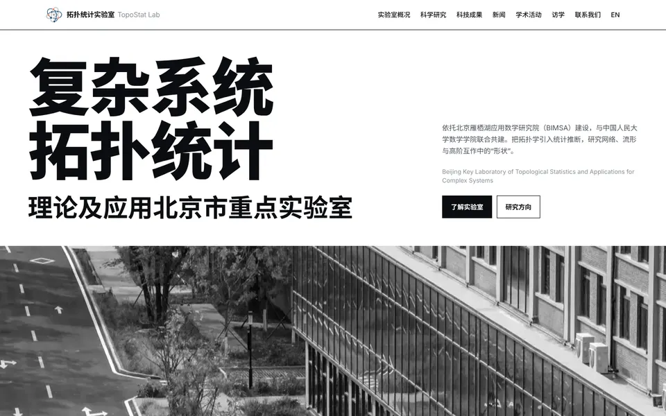
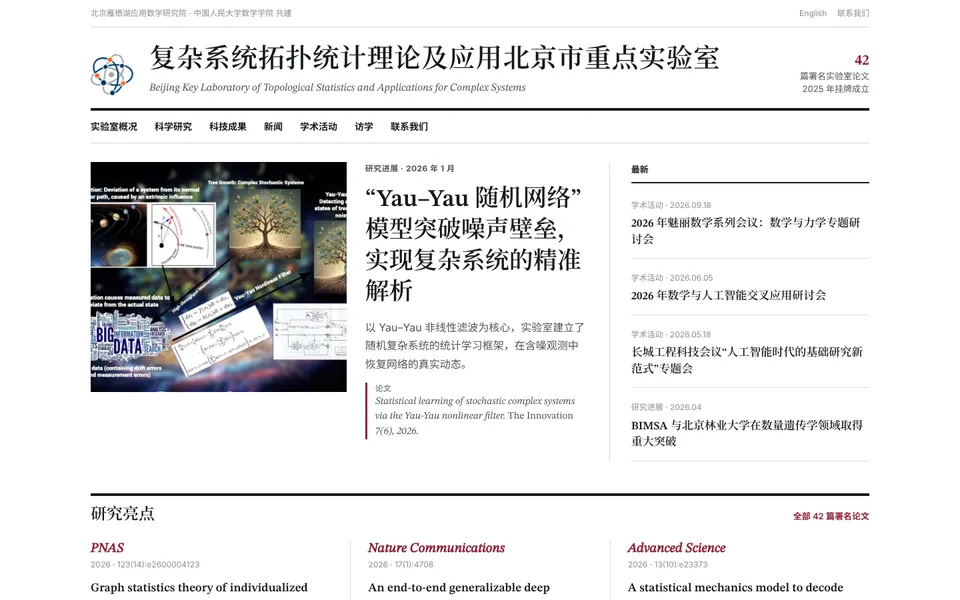
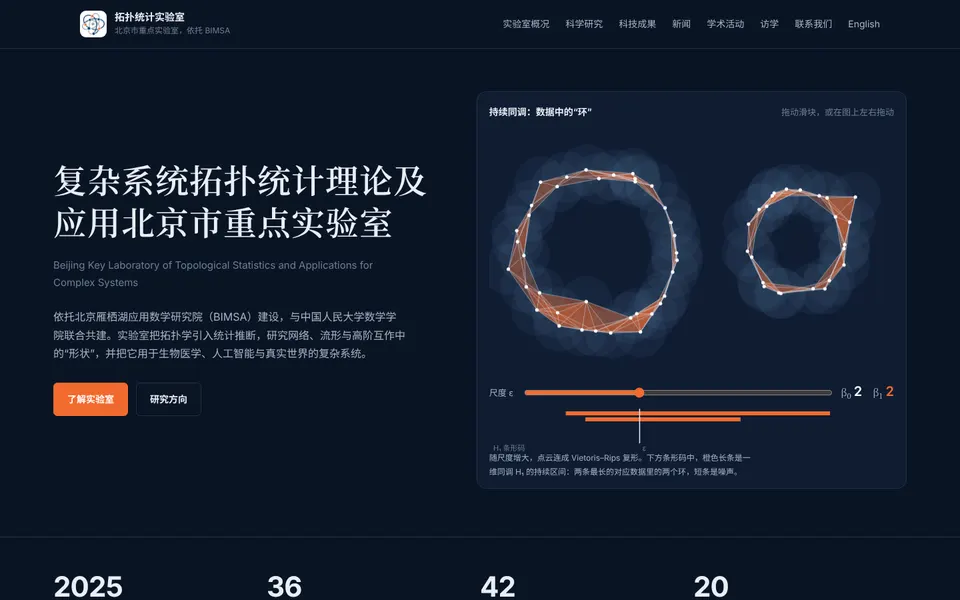
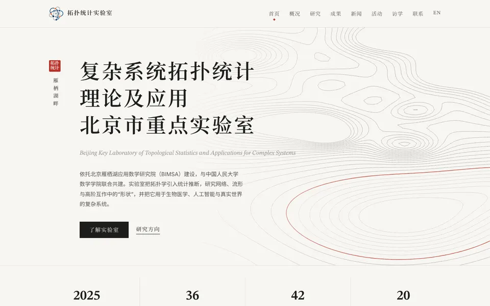

拓扑统计实验室首页 · 风格方案
五个首页方案，全部使用实验室网站上的真实内容：新闻、署名论文、学术带头人、活动照片和正式 LOGO。点开可以在电脑和手机上直接浏览。选定方向后，再按选中的风格改全站。

A学院典雅
白底、深海军蓝与细金线，大号宋体标题，配一幅缓慢旋转的环面线稿。像一所老牌数学研究所。
庄重 · 克制 · 适合正式官网

B瑞士网格
纯白、黑字，取 LOGO 里的橙色做唯一点缀。超大字号、严格网格、黑白照片，悬停时照片恢复彩色。
理性 · 现代 · 辨识度高

C科学期刊
仿顶级期刊的版式：头条研究配大图，侧栏最新动态，下方研究亮点、活动和人物。酒红色点缀。
内容驱动 · 成果突出 · 信息量大

D计算实验室
深色底，首屏是可以拖动的持续同调演示：点云随尺度连成复形，实时显示贝蒂数和条形码。
前沿 · 可交互 · 突出拓扑统计本身

E东方当代
宣纸白、墨色与朱砂红。首屏是程序生成的等高线地形，湖岸线用朱红勾出，竖排栏目名。
含蓄 · 有文化辨识度 · 雁栖湖意象
说明：这些是首页的视觉方案，按钮和链接暂不跳转。人物照片目前分辨率有限，正式上线时建议换成高清照片。